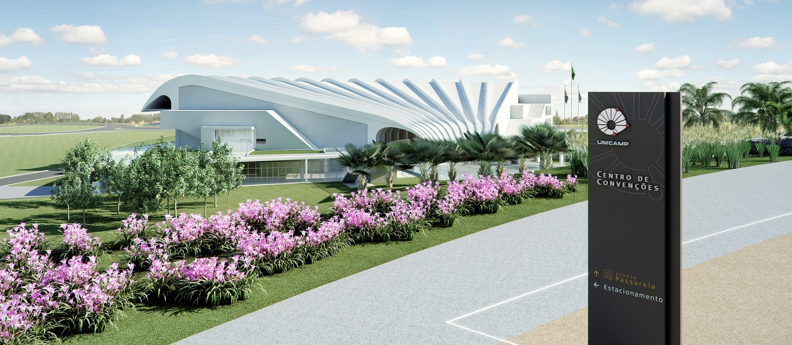
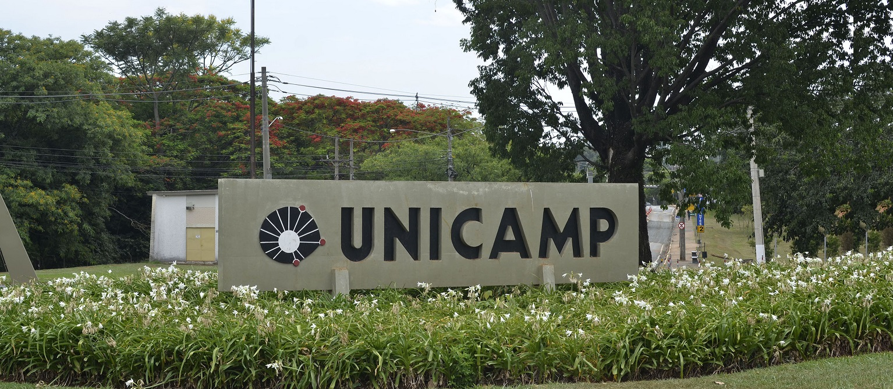
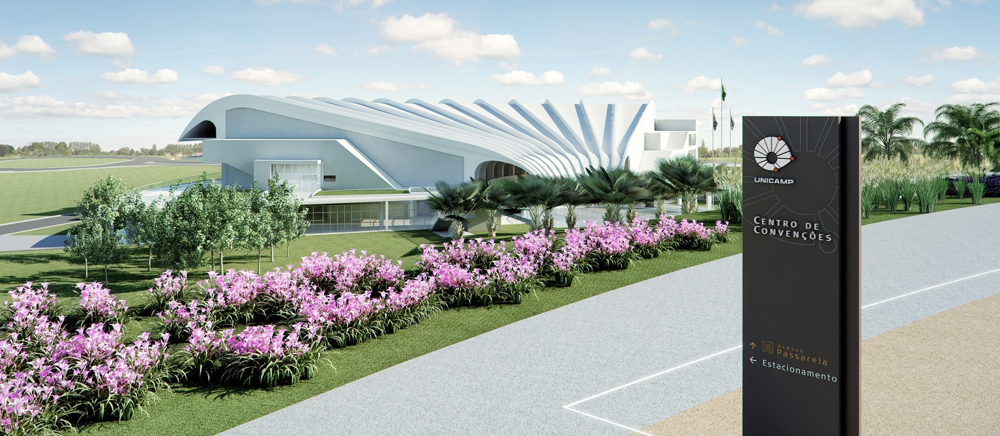
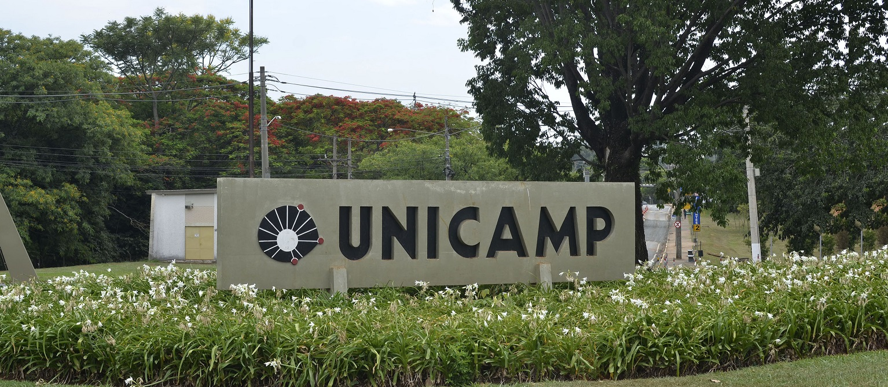

NOSSO TIME
Invasive Team

Verussa Caridi
Atualmente estuda Sistemas de Informação na Faculdade de Tecnologia em Limeira, ingressou na UNICAMP em 2017 no primeiro semestre. É formada tecnica em Informatica integrado ao Ensino Médio pelo Centro Paula Souza na ETEC Rosa Perrone Scavone, se formou em 2015.
Durante seu curto periodo na faculdade participou do programa de PAD (Programa de Apoio Didático) auxiliando os alunos da disciplina de Administração de Empressas, trabalhando com o professor Antonio Carlos Zambon que ministra essa disciplina entre outras.
Desde criança é apaixonado por esportes, principalmente futebol sendo torcedora do Sport Club Corinthians Paulista, e durante se tempo na faculdade aplica essa paixão como Diretora de Esportes da AAATU onde é responsavel pela organização dos treinos de diversas modalidades, suas comissões tecnicas e campeonatos.
Contato

Rodrigo Martins
Tenho 22 anos, nasci em São Paulo-SP; sou uma pessoa dedicada, criativa e curiosa. Gosto de realizar atividades diversas e costumo me ocupar mesmo que seja apenas lendo coisas aleatórias da internet ou descobrindo alguma música nova. Atualmente, sou dono de uma página web chamada 20horas (link), na qual publico meus textos, principalmente poesias. Sou formado no Técnico em Redes de Computadores, com certificações CCNA-Cisco, ingressei na Unicamp em 2014, para fazer Engenharia de Telecomunicações. Re-ingressei em Sistemas de Informação em 2017. Faço parte da organização estudantil ShARE-Unicamp, organização global de consultoria de pesquisas, na qual entrei em 2014. Também possuo interesse em idiomas, sendo fluente em inglês e português. Fiz 1 semestre de alemão e atualmente estou fazendo um curso de mandarim.
Contato
Brenda Alexsandra
Meu nome é Brenda Alexsandra Januário, tenho 20 anos e nasci em Campinas; morava em Sumaré até ingressar na Faculdade de Tecnologia da Unicamp em 2017, dando início ao curso Bacharelado em Sistemas de Informação - curso 94. A conclusão de minha graduação está prevista somente para o ano de 2020, porém durante os 4 primeiros semestres realizados cursei diversas disciplinas importantes para minha formação, tais como Algoritmos e Programação I e II, Organização e Arquitetura de Computadores, Engenharia de Software I, II e III, Programação Orientada à Objetos I e II, Sistemas Operacionais, Banco de Dados I e II, Estrutura de Dados I, Mineração de Dados entre outras. No momento tenho inglês intermediário e estou comecei recentemente um curso de japonês, e, pretendo começar minha Iniciação Científica na área de Mineração de Texto, com o professor Guilherme Palermo Coelho como coordenador, ainda neste ano e iniciar meu e-commerce nas férias.